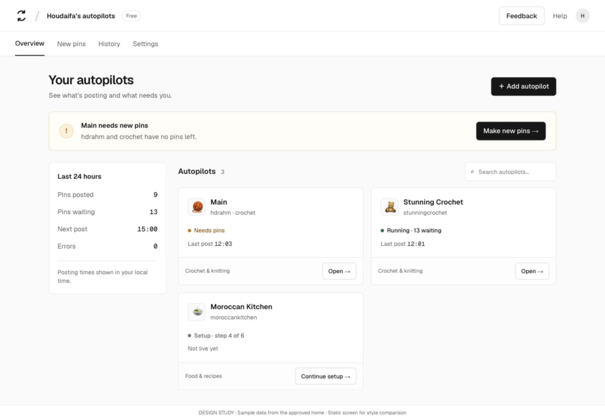
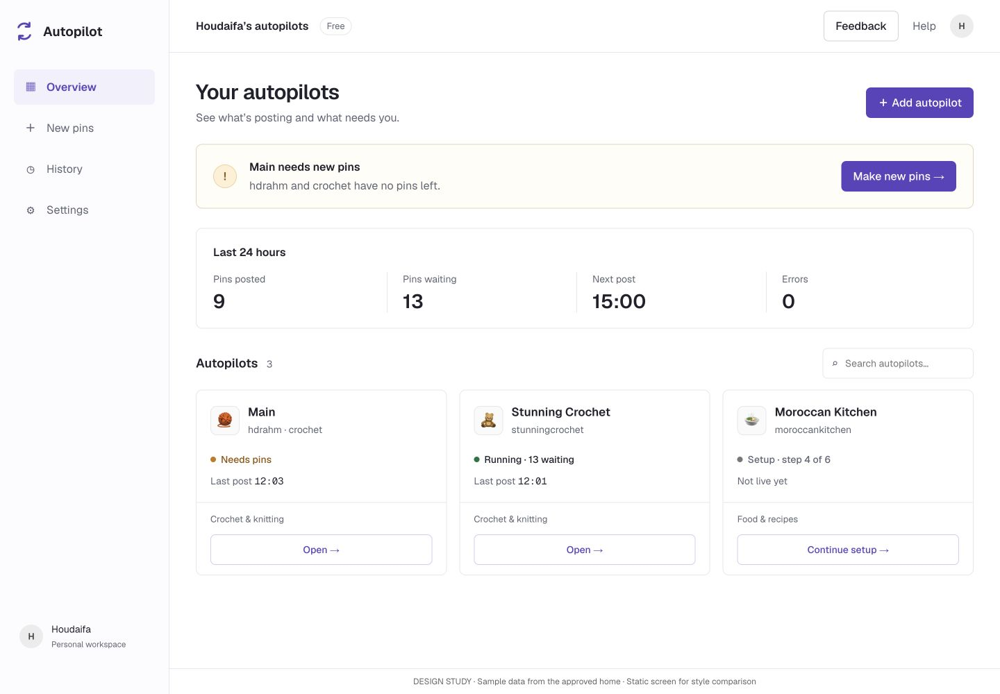

Geist or a sidebar?
Same sample data, same desktop size. C borrows spacing and navigation ideas from Stripe and Untitled UI.
B · Clearer Geist — recommended
Top tabs, black actions, restrained cards
C · Soft sidebar alternative
Persistent navigation, violet actions, larger numbers
Captured 19 October 2026. Click any image to open it at full size.
C · See the soft sidebar alternative · Open C screenshot · Real product references · All research captures